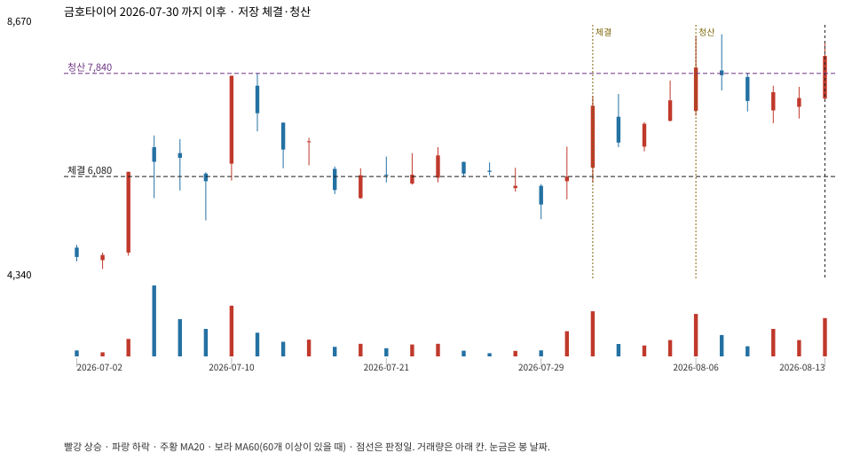

계좌를 다시 돌리지 않았다. 아래는 저장된 주문·체결·청산·비용·손익이다.

{
"case_id": "d219ad9e7b5dd031",
"status": "closed",
"trade": {
"symbol": "073240.KS",
"signal_date": "2026-07-30",
"quantity": 1230,
"entry": 6080,
"stop": 5210,
"target": 7840,
"planned_risk": 1087187.6458499988,
"reserved_cash": 7485878.399999999,
"fill": {
"date": "2026-07-31",
"price": 6080,
"fee": 7478.400000000001
},
"exit": {
"date": "2026-08-06",
"price": 7840,
"reason": "target",
"net_pnl": 2147678.4000000013,
"ambiguous_bar": false
}
},
"cost": "research fee 10bp each side, slippage 5bp; amounts below are the stored ledger, not a new run",
"chart": "c\/d219ad9e7b5dd031.svg"
}